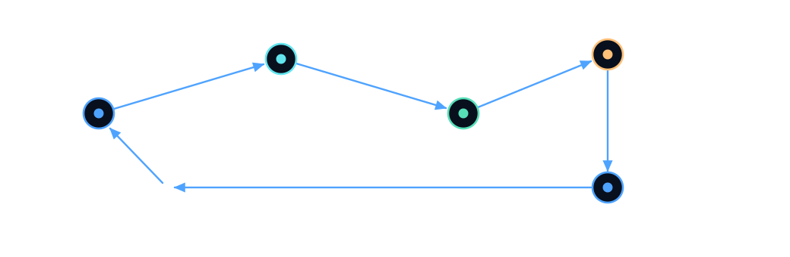

Sandbox × Creators / Founder for a day
BOOMERANG
People leave.
Knowledge comes back.
AI that turns one expert’s know-how into practical knowledge for an entire team.
RALF · STEFAN · ADAM
01 / The problem
BOOMERANG
One goodbye.
Years of know-how gone.
expect company-specific knowledge to be lost when older employees leave.
Source: DIHK Skilled Labour Report 2025/26, p. 18 · survey of nearly 22,000 companies
02 / Our first customer
BOOMERANG
The costly moment is the first unknown problem.
We start where experience is operational, specific, and hard to document.
The expert exits
A senior service technician knows the exceptions and unwritten fixes.
The next shift begins
A new technician faces a failure no checklist explains.
The team guesses
Diagnosis slows down. People ask around. Mistakes repeat.
Our first wedge: technical service and event operations teams.
03 / The product
BOOMERANG
One expert. Knowledge for everyone.
From unspoken experience to verified, usable training.
Capture
AI-guided interviews surface exceptions, shortcuts, and the why behind decisions.
Verify
The expert reviews structured rules and confirms what is actually correct.
Transfer
New employees train on realistic scenarios instead of searching for a PDF.
Not just knowledge storage. Transfer that can be practiced and checked.
04 / What makes it different
BOOMERANG
The knowledge comes back smarter.
A closed feedback loop that exposes what the expert forgot to explain.

Expert explains
Verified rules
Trainee practises
Gap detected
Expert fills gap
When a trainee gets stuck, BOOMERANG asks the expert — not the AI to guess.
05 / Product demo
BOOMERANG
Show the moment the loop closes.
Our demonstration case: troubleshooting a wireless microphone.
Live demo · 60–75 sec
- 01 EXPERT INTERVIEW An experienced tech explains a known failure.
- 02 VERIFIED MEMORY The system creates a sourced, approved rule.
- 03 UNSEEN CASE A trainee hits a genuinely missing exception.
- 04 KNOWLEDGE RETURNS The expert answers. The next trainee succeeds.
06 / Business model
BOOMERANG
Start narrow. Prove value. Expand.
A service-led pilot today; a scalable software platform tomorrow.
First buyer
Technical service team leaders
Companies with complex handovers and repeatable field problems.
Pilot price · hypothesis
€490
One expert · One workflow · Practical training · Outcome review
Recurring model
Per team / per workspace
Subscription pricing to be validated in pilots.
Expand from service operations → industrial maintenance → complex enterprise workflows
07 / Evidence & customer validation
BOOMERANG
What did real customers tell us?
Replace the fields below with your actual interview results before submission.
Requires real interview evidence
Customer conversation 01
[Role / type of business]
“[Exact quote about a recent costly knowledge handover]”
Customer conversation 02
[Role / type of business]
“[Exact quote + willingness to test or pay]”
Key learning: [What your interviews changed about the product or target customer]
08 / The team
Three people.
One mission.
People leave.
Knowledge comes back.
BOOMERANG
Backup / Sources & assumptions
BOOMERANG
Sources. Assumptions. What we can prove.
DIHK Skilled Labour Report 2025/2026, page 18: 23% overall and 35% industrial businesses expect knowledge loss when older employees leave. Survey nearly 22,000 companies.
€490 is a proposed pilot test price, not a verified market price. Subscription model is a hypothesis.
Use only actual interview details and quotes. Remove or edit Slide 8 if interviews are missing.
Show only working application features as live. Design diagrams depict intended product flows.